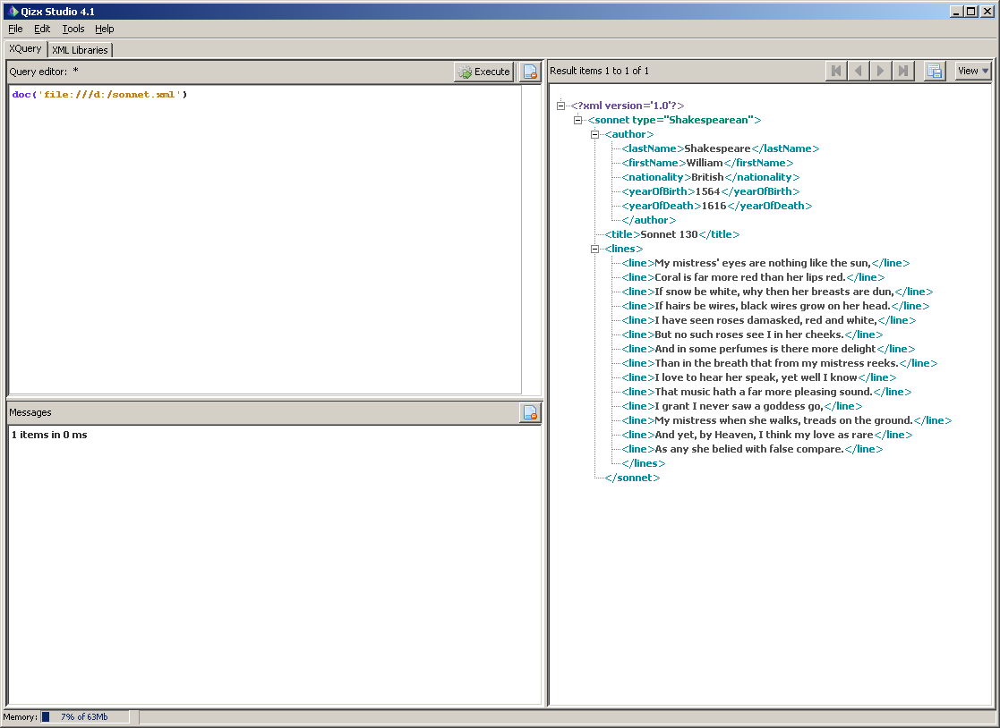
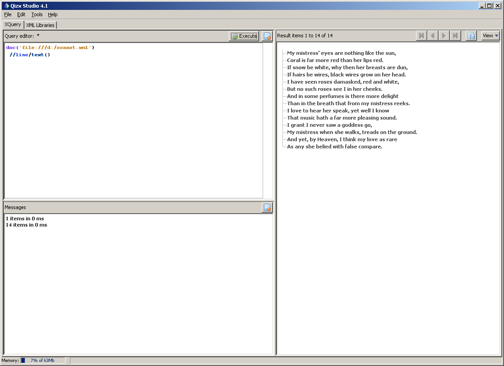

Цель лабораторной работы:
Познакомиться c технологиями XPath, XQuery.
Краткое описание XPath и XQuery можно прочитать в лекции №5 или в этой презентации (© А.С. Деревянко). Технология XPath предназначена для адресации какой-либо части дерева XML, и, чаще всего, используется вместе с технологией XSLT. XQuery является своего рода расширением языка XPath, и позволяет строить более сложные запросы к дереву XML документа (например, к разным его веткам).
Программирование XPath и XQuery запросов является с программной точки зрения нелегкой задачей, поэтому для их создания воспользуемся freeware open source утилитой qizx/open. Утилита написана на Java. Ее можно скачать с официального сайта, или портативную (не требующую инсталляции) версию отсюда. В случае, если дистрибутив взят с официального сайта, то для запуска воспользуйтесь документацией. Если дистрибутив скачан с сайта кафедры, то достаточно распаковать содержимое архива, и в поддиректории BIN запустить файл start.bat. Естественно, что в обоих случаях для работы программы необходима установленная в системе машина Java (тестировалось с jre 6 upd 22).
Пусть мы имеем XML документ sonnet.xml следующего содержания:
Общий вид запущеного приложения qizx

Чтобы загрузить XML документ для разбора парсером, необходимо выполнить комманду
doc('file:///полный_путь/sonnet.xml');
например,
doc('file:///d:/devj/xml/sonnet.xml');
Если необходимо "выполнить" выражение XPath, необходимо воспользоваться коммандой
doc(...) XPath_выражение
Например, выражение
doc('file:///d:/devj/xml/sonnet.xml')
//line/text()
Выдаст построчно содержимое соннета.

Необходимо для XML документа, созданого в первой лабораторной работе, выполнить такие запросы:
Отчет должен содержать: